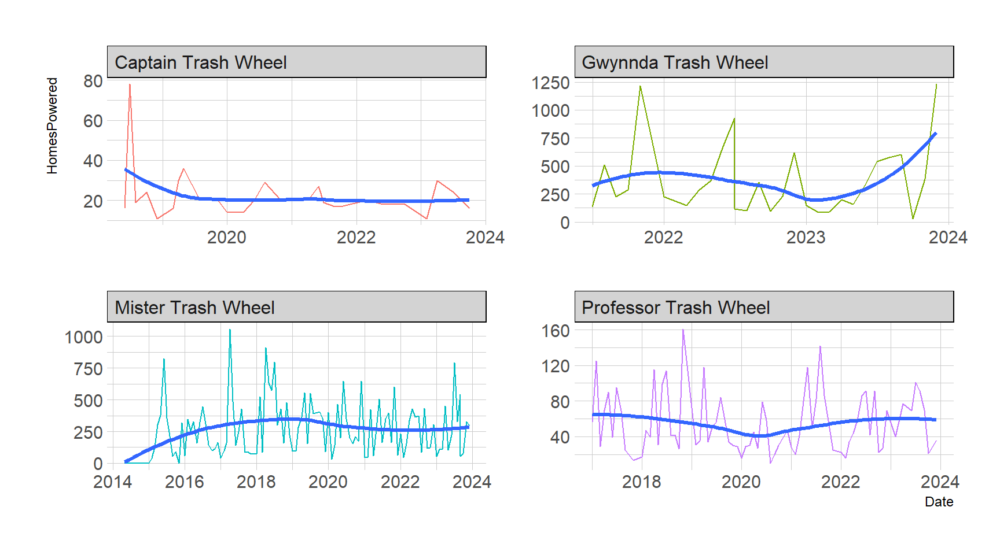

library(knitr)
library(tidyverse)
library(lubridate)
library(socviz)
library(ggthemes)
library(ggrepel)
library(ggtext)
library(hrbrthemes)
library(gapminder)
library(ggridges)DANL 399: Data Visualization and Presentation
Midterm Exam
Loading R packages
Direction
Email your Quarto document for the Midterm Exam to Byeong-Hak Choe at bchoe@geneseo.edu.
Honor Pledges
I solemnly swear that I will not cheat or engage in any form of academic dishonesty during this exam.
I will not communicate with other students or use unauthorized materials.
I will uphold the integrity of this exam and demonstrate my own knowledge and abilities.
By taking this pledge, I acknowledge that academic dishonesty undermines the academic process and is a violation of the trust placed in me as a student.
I accept the consequences of any violation of this promise.
- Student’s Name: Jason Copella
- Student’s ID: G00792817
- Student’s Signature: Jason Copella
Load R packages
- Here we are loading all the R packages we need for the Midterm Exam, so that you do not need to load the R packages in your code.
library(tidyverse)
library(skimr)Question 1
The following describes the context of the data.frame, trashwheel.
Using The Power of Nature to Clean the Oceans

Mr. Trash Wheel is a semi-autonomous trash interceptor that is placed at the end of a river, stream or other outfall.
Far too lazy to chase trash around the ocean, Mr. Trash Wheel stays put and waits for the waste to flow to him.
Sustainably powered and built to withstand the biggest storms, Mr. Trash Wheel uses a unique blend of solar and hydro power to pull hundreds of tons of trash out of the water each year.
Meet the Mr. Trash Wheel Family

- Installed: May 9, 2014
- Location: Jones Falls stream, Inner Harbor, Baltimore, MD

- Installed: December 4, 2016
- Location: Harris Creek, Canton neighborhood, Baltimore, MD

- Installed: June 5, 2018
- Location: Masonville Cove, Baltimore, MD

- Installed: June 3, 2021
- Location: Gwynns Falls, West Baltimore, MD
- The following is the data frames for Question 1.
trashwheel <- read_csv('https://bcdanl.github.io/data/trashwheel.csv')Variable Description for trashwheel
| variable | type | description |
|---|---|---|
Name |
character | Name of the Trash Wheel |
Month |
character | Month |
Year |
numeric | Year |
Date |
character | Date (Monthly) |
Weight |
numeric | Weight in tons |
Volume |
numeric | Volume in cubic yards |
PlasticBottles |
numeric | Number of plastic bottles |
Polystyrene |
numeric | Number of polystyrene items |
CigaretteButts |
numeric | Number of cigarette butts |
GlassBottles |
numeric | Number of glass bottles |
PlasticBags |
numeric | Number of plastic bags |
Wrappers |
numeric | Number of wrappers |
SportsBalls |
numeric | Number of sports balls |
HomesPowered |
numeric | Homes Powered - Each ton of trash equates to on average 500 kilowatts of electricity. An average household will use 30 kilowatts per day. |
Q1a
- Provide an R code to calculate mean and standard deviation of
Volumefor “Mister Trash Wheel”.
Answer :
mean(trashwheel$Volume)[1] 60.96708sd(trashwheel$Volume)[1] 61.35656Q1b
- Provide a ggplot code to replicate the following ggplot figure that describes how the distribution of
Weightvaries byName.- The number of bins in each subplot below is 15.
Answer :
ggplot(trashwheel) +
geom_bar(mapping = aes(x = Weight, fill = Name), show.legend = FALSE) +
facet_wrap(. ~ Name) +
scale_y_continuous(
limits = c(0, 40), breaks = c(10,20,30))Q1c
- Provide a comment to describe how the distribution of
Weightvaries byName, as visualized in Q1b.
Answer : The Professor and Captain trashwheels exclusively pickup smaller weight.The Mister and Gwynnda, meanwhile, carry a wide range of weights, both heavy and small.
Q1d
- Provide a ggplot code to replicate the following ggplot figure that describes how the monthly trend of
HomesPoweredvaries byName.
Answer :
trashwheel |>
ggplot(aes(x = Date, y = HomesPowered)) +
geom_line(aes(color = Name), show.legend = FALSE) +
geom_smooth(size = 1.1, method = loess , se = FALSE, formula = y ~ log(x)) +
facet_wrap(. ~ Name, scales = "free")
Q1e
- Provide a comment to describe how the monthly trend of
HomesPoweredvaries byName, as visualized in Q1d.
Answer : The Professor, Mister, and Captain trash wheels have overall stayed at a consistent rate through the years. The Gwynnda trashwheel has grown substantially recently. The Mister powers its most homes during the middle months of the year, while the Professor fluctuates each month. The Gwynnda powers its most homes during the later months of the year. The Captain mainly powers its most homes around the middle months of the year.
For Q1f and Q1h, use the following data.frame, trashwheel_long.
trashwheel_long <- trashwheel |>
ungroup() |>
select(Name, Date, PlasticBottles:SportsBalls) |>
pivot_longer(cols = PlasticBottles:SportsBalls,
values_to = "Number",
names_to = "Trash_Type") |>
arrange(Trash_Type, Date)Variable Description for trashwheel_long
| variable | type | description |
|---|---|---|
Name |
character | Name of the Trash Wheel |
Date |
character | Date (Monthly) |
Trash_Type |
numeric | Type of Trashes |
Number |
numeric | Number of trash items |
Q1f
- Provide a ggplot code to replicate the following ggplot figure that describes how the daily trend of
log10(Number)varies byTrash_TypeandName.
Answer :
trashwheel_long |>
ggplot(aes(x = Date, y = log10(Number))) +
geom_line(aes(color = Trash_Type)) +
geom_smooth(size = 1.1, method = loess , se = FALSE) +
facet_wrap(. ~ Name, scales = "free")Q1g
- Provide a comment to describes how the daily trend of
log10(Number)varies byTrash_TypeandName, as visualized in Q1f.
Answer : For every Name, cigarette butts were the highest log10(Number) value. Mister was the only trash wheel to collect sports balls, the other three did not at all. For the most part, all other types of trash followed the same trend as the other trash types for a given trashwheel.
Q1h
- Provide a ggplot code to replicate the following ggplot figure that describes how the distribution of
log10(Number)varies byTrash_TypeandName.
Answer :
trashwheel_long |>
ggplot(aes(x = log10(Number), y = Trash_Type)) +
geom_boxplot(aes(fill = Trash_Type),show.legend = FALSE) +
facet_wrap(. ~ Name, scales = "free")Q1i
- Provide a comment to describe how the distribution of
Numbervaries byTrash_TypeandName, as visualized in Q1h.- In your comment, please include how the median
Numberof “CigaretteButts” varies byName.
- In your comment, please include how the median
Answer : The Captain is the only trashwheel to have a median number of cigarettes less than four. The Gwynnda had a far greater disitrbution of values in comparison to the other three trashwheels. The Gwynnda and Captain did not collect any sports balls or glass bottles, whil the other two both collected glass bottles. The overall distribution besides the lack of inclusion of those two trash types is similar for all four trashwheels.
Question 2
The following data is for Question 2:
gapminder <- gapminder::gapminderQ2a
- Replicate the following ggplot.
- Use the color
#496d9bfor United States, and#fffff0for the rest of countries.
- Use the color
gapminder |>
filter(continent != "Oceania") |>
ggplot(aes(x = lifeExp, y = country)) +
geom_boxplot(aes(fill = "#fffff0"),show.legend = FALSE) +
facet_wrap(. ~ continent, scales = "free")Q2b
- Make a simple comment on the visualization result. The United States has the second highest life expectancy for countries in the Americas. This should be expected for a nation on the forefront of medical work and development, as well as food/water availability.
Question 3
The following data set is for Question 3:
political_ideology <- read_csv(
'https://bcdanl.github.io/data/political_ideology.csv')Q3a
- Replicate the following ggplot.
political_ideology <- political_ideology |>
mutate(
party = fct_relevel(party,
"GOP", "DEM"),
party = fct_recode(party,
Republican = "GOP",
Democrat = "DEM")
)
p <- ggplot(political_ideology,
aes(x = ideology_score, y = factor(year),
fill = party)
)
p + geom_density_ridges(
scale = 3, rel_min_height = 0.01,
color = "white", alpha = 0.5) +
scale_x_continuous(
name = "Ideology score",
limits = c(-1.00, 1.5), breaks = c(-0.75, -0.50, -0.25, 0, 0.25, 0.50, 0.75, 1.00)
) +
scale_y_discrete(
name = "Year", breaks = c(1963, 1973, 1983, 1993, 2003, 2013)) +
scale_fill_manual(values = c("red","blue"))Q3b
- Make a simple comment on the visualization result in Q3a. As time has gone on, Republicans have had a positive increase in ideology score while democrats have had a negative increase in ideology score, showing greater divide between the two parties.
Question 4
In September 2019, YouGov survey asked 1,639 GB adults the following question:
In hindsight, do you think Britain was right/wrong to vote to leave EU?
- Right to leave
- Wrong to leave
- Don’t know
The data from the survey is in brexit.csv.
brexit <- read_csv('https://bcdanl.github.io/data/brexit.csv')Q4a
- Replicate the following visualization
brexit <- brexit |>
mutate(
region = fct_relevel(region,
"london", "rest_of_south", "midlands_wales", "north", "scot"),
region = fct_recode(region,
London = "london",
`Rest of South` = "rest_of_south",
`Midlands / Wales` = "midlands_wales",
North = "north",
Scotland = "scot")
)
ggplot(brexit,
aes(y = opinion, fill = opinion)) +
geom_bar() +
facet_wrap( ~ region,
nrow = 1,
labeller = label_wrap_gen(width = 12)) +
guides(fill = "none") +
labs(
title = "Was Britain right/wrong to vote to leave EU?",
subtitle = "YouGov Survey Results, 2-3 September 2019",
caption = "Source: bit.ly/2lCJZVg",
x = NULL, y = NULL
) +
scale_fill_manual(values = c(
"gray",
"#67a9cf",
"#ef8a62"
)) +
theme_minimal()Q4b
- Replicate the following visualization
- How is the story this visualization telling different than the story the plot in Q4a?
brexit <- brexit |>
mutate(
region = fct_relevel(region,
"london", "rest_of_south", "midlands_wales", "north", "scot"),
region = fct_recode(region,
London = "london",
`Rest of South` = "rest_of_south",
`Midlands / Wales` = "midlands_wales",
North = "north",
Scotland = "scot")
)
ggplot(brexit,
aes(y = opinion, fill = opinion)) +
geom_bar() +
facet_wrap( ~ region,
nrow = 1,
labeller = label_wrap_gen(width = 12), scales = "free_x") +
guides(fill = "none") +
labs(
title = "Was Britain right/wrong to vote to leave EU?",
subtitle = "YouGov Survey Results, 2-3 September 2019",
caption = "Source: bit.ly/2lCJZVg",
x = NULL, y = NULL
) +
scale_fill_manual(values = c(
"gray",
"#67a9cf",
"#ef8a62"
)) +
theme_minimal()Q4c
- First, calculate the proportion of wrong, right, and don’t know answers in each region and then plot these proportions (rather than the counts) and then improve axis labeling.
q4 <- brexit |>
group_by(region, opinion) |>
summarise(n = n()) |>
mutate(tot = sum(n),
prop = n / tot ) - Replicate the following visualization
- How is the story this visualization telling different than the story the plot in Q4b?
ggplot(q4,
aes(x = prop, y = opinion, fill = opinion)) +
geom_col() +
facet_wrap( ~ region,
nrow = 1,
labeller = label_wrap_gen(width = 12), scales = "free_x") +
guides(fill = "none") +
labs(
title = "Was Britain right/wrong to vote to leave EU?",
subtitle = "YouGov Survey Results, 2-3 September 2019",
caption = "Source: bit.ly/2lCJZVg",
x = "Percent", y = NULL
) +
scale_fill_manual(values = c(
"gray",
"#67a9cf",
"#ef8a62"
)) +
theme_minimal()Q4d.
- Recreate the same visualization from the previous exercise, this time dodging the bars for opinion proportions for each region, rather than faceting by region and then improve the legend.
ggplot(q4,
aes(x = prop, y = region, fill = opinion)) +
geom_col(position = position_dodge()) +
guides(fill = "none") +
labs(
title = "Was Britain right/wrong to vote to leave EU?",
subtitle = "YouGov Survey Results, 2-3 September 2019",
caption = "Source: bit.ly/2lCJZVg",
x = "Percent", y = NULL
) +
scale_fill_manual(values = c(
"gray",
"#67a9cf",
"#ef8a62"
)) +
theme_minimal()- How is the story this visualization telling different than the story the previous plot tells?
This visualization allows us to easily compare the various region and their opinions. They are now no longer side by side and are instead compared on top of each other. This allows for an for a much easier comparison between the various opinion rates of the regions. Before, it was hard to compare them as they were not easily presented on top of each other as they are now.